Nueva web de
preparaciones de laboratorio
Plataforma interactiva diseñada para guiar al paciente y optimizar la autogestión de preparaciones de estudios médicos.
Plataforma interactiva diseñada para guiar al paciente y optimizar la autogestión de preparaciones de estudios médicos.
Informe técnico e impacto operativo
Nuestro slogan afirma que somos "El mejor lugar para venir aunque no tengas ganas". Sabemos que nadie se despierta con ganas de sacarse sangre o realizarse estudios médicos; es una obligación que muchas veces genera ansiedad, incertidumbre y estrés. Nuestro compromiso, entonces, es hacer que todo el proceso sea lo más amable, rápido y sencillo posible.
Sin embargo, para cumplir realmente con esta promesa, debemos entender que la experiencia del paciente no comienza cuando cruza la puerta de nuestras sucursales, sino que empieza mucho antes: en su casa, frente a una pantalla, con una orden médica en la mano y la necesidad de entender qué debe hacer. Ese es nuestro primer punto de contacto.
Si ese acercamiento inicial es frustrante, si las indicaciones no son claras o si requiere un esfuerzo extra para conseguir una respuesta básica, ya estamos fallando en nuestro objetivo antes de que el paciente llegue al laboratorio. Le estamos exigiendo energía extra a alguien que, de por sí, "no tiene ganas" de hacer este trámite.
Este documento detalla la problemática operativa y de servicio que enfrentamos actualmente debido a las limitaciones de nuestra plataforma digital, y presenta una solución: la nueva web de preparaciones. El objetivo de este proyecto es transformar ese primer contacto en una experiencia de autogestión simple y resolutiva, que le demuestre al paciente, desde el primer clic, por qué somos el mejor lugar para cuidarse.
Las métricas actuales nos indican que estamos generando un obstáculo y sumando estrés mucho antes de que el paciente llegue al laboratorio. Cuando la plataforma digital falla se traduce en una sobrecarga de nuestros canales de atención.
Para dimensionar el problema, basta con observar el volumen de contacto reciente. Nuestro promedio general es de aproximadamente 2.600 consultas mensuales entre todos los canales (teléfono y emails): entre el 1 y el 24 de agosto, recibimos 1.636 llamados y 763 correos electrónicos. Esto significa que el equipo está absorbiendo una demanda operativa muy alta para responder preguntas que deberían estar automatizadas.
¿Por qué se saturan nuestros canales? El feedback recurrente que recibimos durante esos cientos de llamados expone las falencias de nuestra web actual:
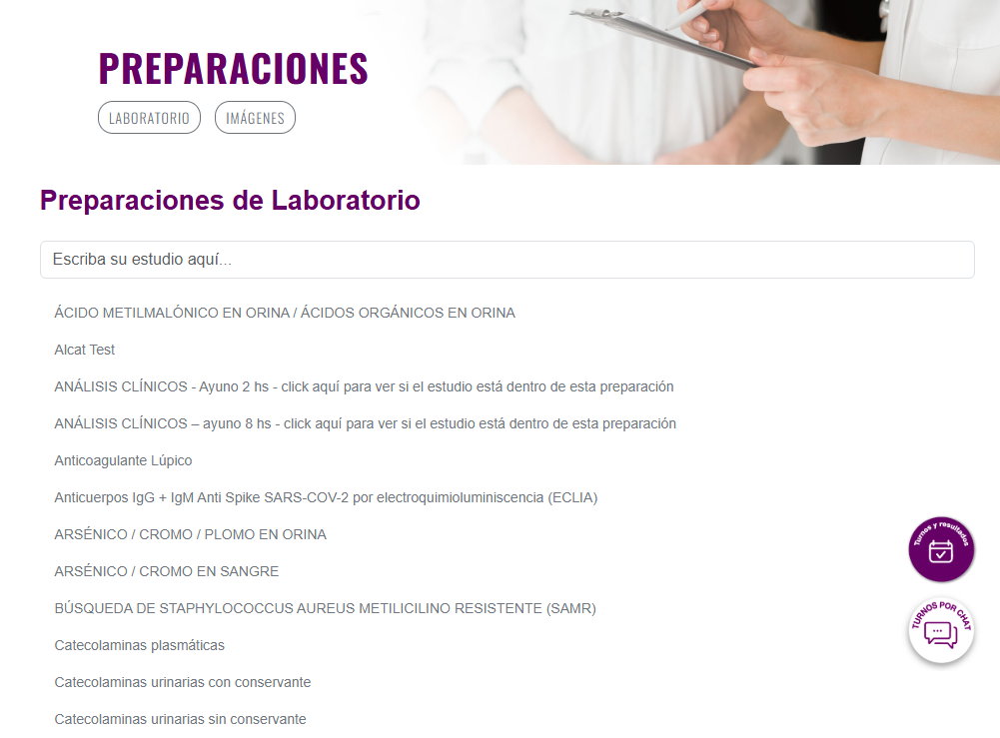
Este escenario genera un círculo vicioso: ante una web que no resuelve sus dudas, el paciente llama por teléfono; al haber cientos de pacientes llamando al mismo tiempo por el mismo motivo, las líneas se saturan. El resultado final es otra queja muy frecuente: "Es difícil comunicarse con el laboratorio".
En lugar de allanarles el camino, la experiencia digital actual les genera trabas y demoras, y nos aleja del objetivo de ser el mejor lugar para venir.
En el rubro de la salud, y específicamente en los laboratorios de análisis clínicos, la norma general es ofrecer sitios web estáticos, poco amigables y centrados en la burocracia en lugar de en el usuario. Si observamos a nuestros principales competidores, sus plataformas sufren de los mismos problemas que enfrentamos nosotros hoy: buscadores deficientes, listados interminables y falta de claridad que obligan al paciente a levantar el teléfono[cite: 4].
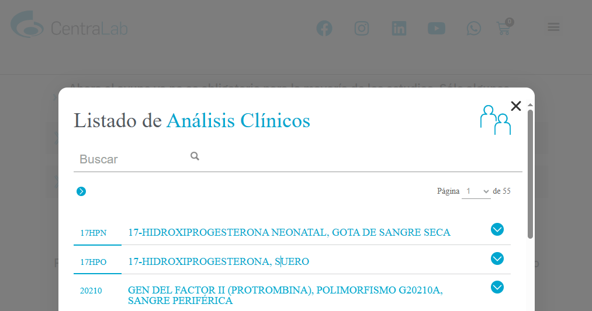
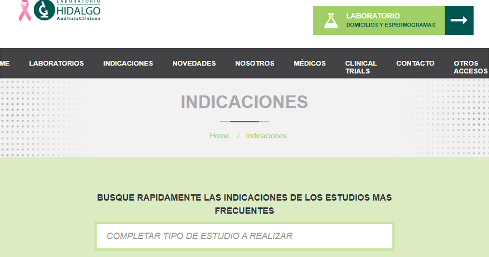
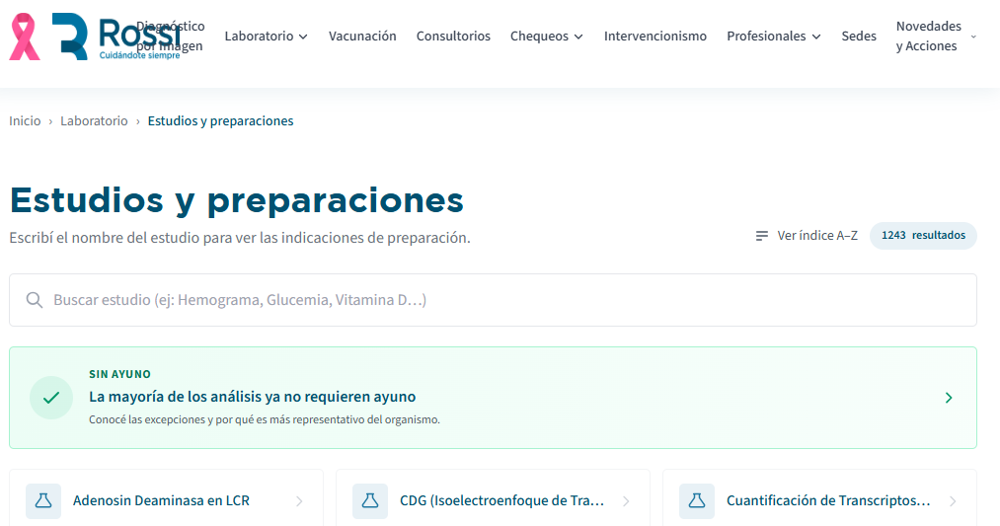
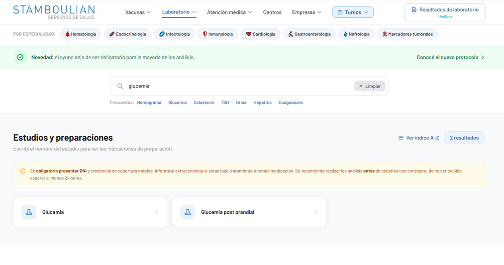
Esta debilidad generalizada del mercado es una gran oportunidad para nosotros. Al implementar la nueva web de preparaciones, no solo estamos resolviendo un cuello de botella operativo interno, sino que nos estamos desmarcando de la competencia de manera contundente. Pasamos de ofrecer un estándar promedio a ser pioneros en brindar una experiencia digital 100% centrada en el paciente.
Mientras otros laboratorios siguen frustrando a las personas con indicaciones confusas y obligándolas a esperar en líneas telefónicas saturadas, nosotros les ofrecemos autonomía, rapidez y tranquilidad desde sus propios dispositivos[cite: 4]. Esta es una ventaja competitiva real que fideliza al paciente. Por contraste directo con la competencia, esta innovación tecnológica reafirma nuestro diferencial y demuestra con hechos por qué somos "el mejor lugar para venir aunque no tengas ganas".
Para transformar verdaderamente el primer contacto de nuestros pacientes y reducir la saturación de nuestros canales de atención, proponemos el desarrollo de una nueva web de preparaciones. El salto cualitativo radica en pasar de un sitio estático (donde el paciente debe investigar) a una plataforma inteligente y dinámica que hace el trabajo por él.
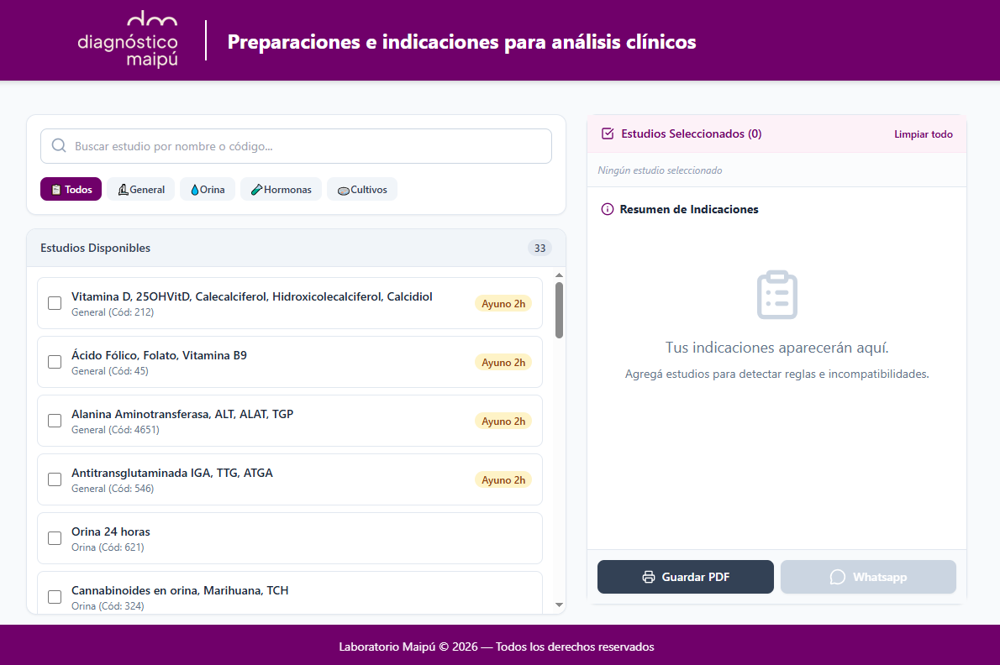
La nueva web estará impulsada por tecnología y diseño centrado en el usuario, destacando las siguientes funcionalidades clave:
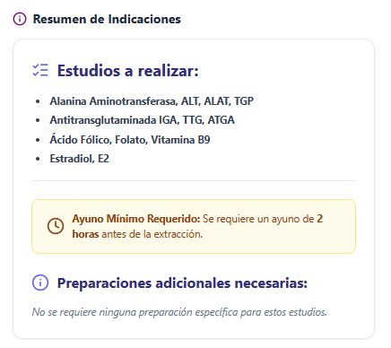
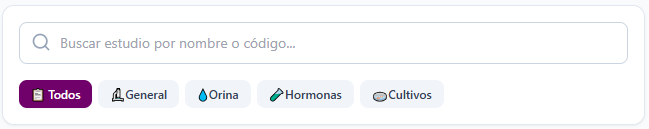
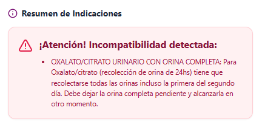
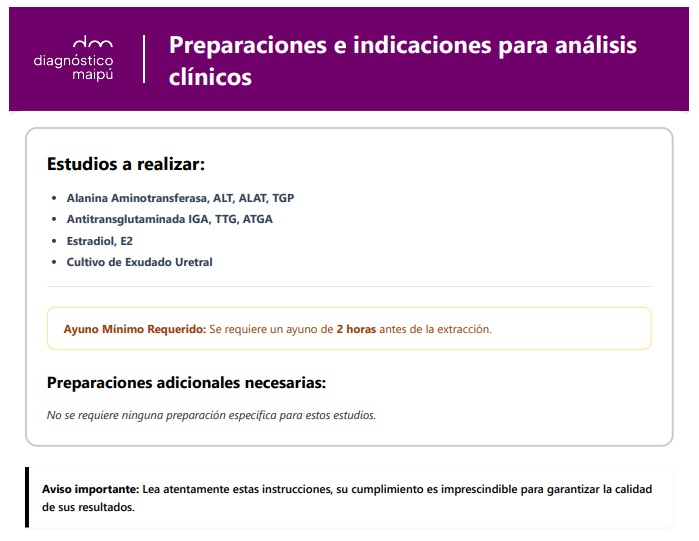
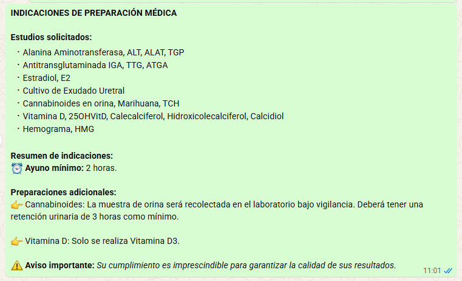
El impacto en nuestra operación diaria: Al brindarle al paciente una herramienta precisa y fácil de usar, atenuamos la incertidumbre. Si la web le dice exactamente qué hacer, cómo hacerlo y se lo envía al celular en segundos, no hay necesidad de levantar el teléfono ni enviar un mail[cite: 4]. Esta autogestión eficiente es la clave para desinflar ese volumen de más de 2.600 consultas mensuales, asegurando que el paciente llegue al laboratorio seguro, preparado y tranquilo y, además, devolviéndole tiempo valioso a nuestro equipo para gestionar más eficazmente las consultas de aquellas personas que no se llevan bien con la tecnología.
La saturación actual de nuestros canales de atención es un síntoma claro de que el modelo tradicional de información ya no es suficiente[cite: 4]. Mantener el modelo actual significa seguir invirtiendo tiempo de nuestro equipo en resolver dudas operativas, mientras sometemos al paciente a un proceso confuso y burocrático.
La implementación de la nueva web de preparaciones es un cambio de paradigma en nuestra forma de brindar servicio. Al integrar consolidar las indicaciones y permitir la autogestión directa vía PDF o WhatsApp, estamos transformando un proceso que históricamente genera ansiedad en una experiencia fluida, segura y empática.
Este proyecto nos otorga un doble triunfo: por un lado, fidelizamos a nuestros pacientes al mejorar su experiencia con nuestro servicio; por el otro, nos posicionamos muy por encima de la competencia al ofrecer una herramienta de innovación líder en el mercado.
Al final del día, demostrar que somos "El mejor lugar para venir aunque no tengas ganas" no se trata solo de tener buenas instalaciones o profesionales amables en la sucursal. Se trata de cuidar el tiempo y la tranquilidad de las personas desde el momento cero. Con esta nueva web, le decimos al paciente: sabemos que este trámite da fiaca, por eso ya hicimos el trabajo difícil por vos. Así, garantizamos que su experiencia sea la mejor posible, desde el primer clic en su casa hasta que cruza nuestra puerta.
Toca en cualquier parte para cerrar